|
|
◎ 2007年 南東北6m DXer's 忘年会(2007.12/15-16)
JA7エリアの南東北6m DXer'sの忘年会が12月15-16日の両日、宮城県亘理郡山元町坂元字川内のバーディーヒル（ ㈱ケーヒン研修厚生施設）で開催された。
この施設での忘年会は昨年に続き、2度目となるが、近くにゴルフ場を控えた高台の閑静な場所は、
"夜通しの飲み会"には絶好の環境。今回は1エリアからの参加者も含め13名が集結。
サイクル24に向けて、いよいよ本格的な始動を始めた局もいて、午前3時頃まで"6mDXの話"で盛り上がった。
翌16日は、仙台近郊の新築のタワーやアンテナの見学に向かうグループなどに分散、
2008年のコンデション上昇に期待して、昼前には解散となった。
|
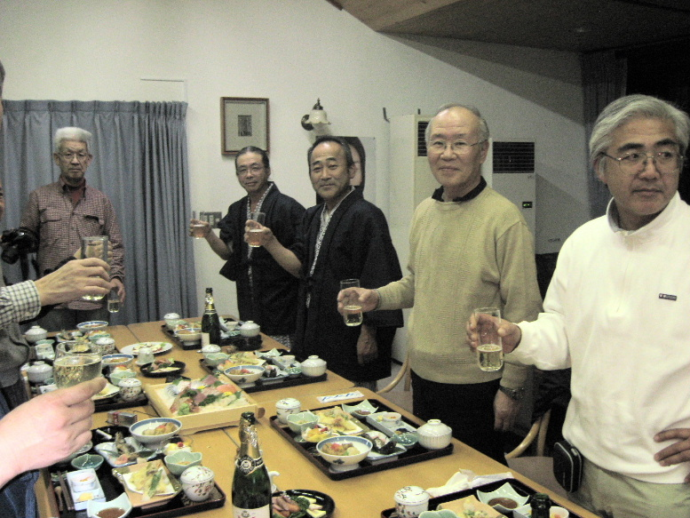
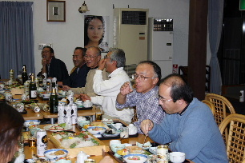
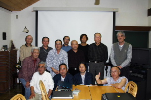
後列左から
JA7AHK(能登)、JH7JGM(宍戸)、JA7QVI(平間)、JH7APD(吉田)、JN1JFC(宮本)
JA7JWF(小林)、JH7MSB(伊藤)、JA1RJU/JA7JU(小笠原)、JE1HMZ(江刺)
前列左から
JA7MIT(仁和)、JH7WCF(三木松)、JH7DHS(本田)、JA7WSZ(浜名)の各局。
◎ 第36回東北6SGミーティング・"相馬大会"開催
(2007.09.10)
第36回東北6SGミーティングが2007年9月8日-9日の両日、福島県相馬市の観光ホテル『喜楽荘』で開催された。
東北6SGミーティングは毎年6月～7月に行われているが、昨年のEsシーズンのこの時期は、
マルチホップでヨーロッパが連日オープンするといったFBなコンデションが続いたこともあり、
今年はゆっくりDXを楽しんでもらおうとの"親心"から9月に開催時期を延期しての開催となった。
残念なことに今年はEsシーズンのコンデションは昨年の様な上昇は見られず期待外れに終ったが、
参加者は時期遅れの開催にも関係なく、年に一度のアイボールQSOを盛大に楽しんだ。
|
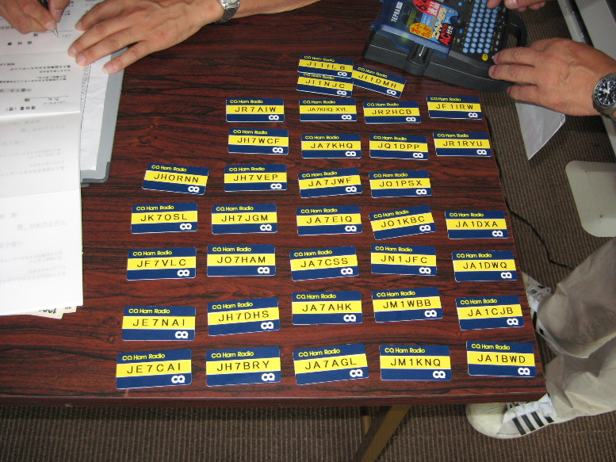
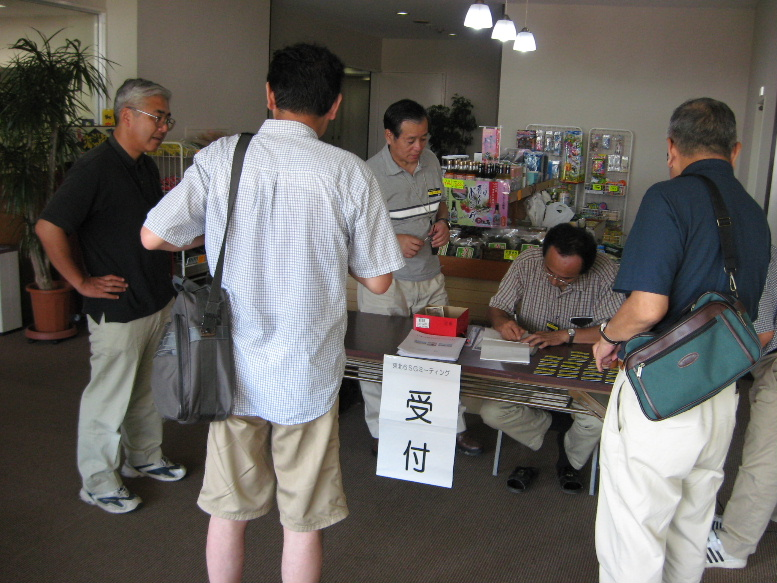
6SG・相馬大会の受付に並ぶ参加者の"名札"
初日の懇親会は18:00時から地元福島のJH7WCF・三木松さんの開会の挨拶、JA7WSZ・浜名さんの歓迎の言葉に続いて、
愛知・豊田市から参加したJR2HCBの乾杯で始まった。
参加者全員の自己紹介の前に、今年で開局50周年目を迎えたJA7JU/JA1RJU局に、参加者全員から記念の"盾"が贈られた。
青森県弘前市でJA7JUを開局して第一声を発信したのは1957年9月8日の1800時だった。
くしくもこの日のミーティングが始まった2007年9月8日1800時が"50年前目"となった。
JA7JU開局当時のシャックの写真、50MHzでの初QSOのQSLなど"50年の記録"がプロジェクターで紹介された。
この突然の幹事の皆さんの"粋なはからい"にJA1RJUも大感激だった。
|
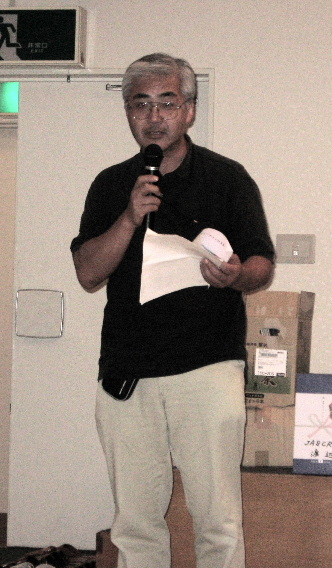
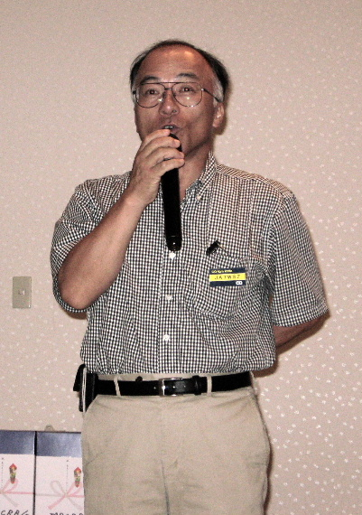
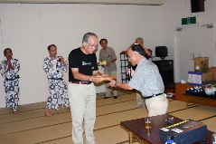
司会進行はJA7MIT / JA7WSZから歓迎の挨拶
開局50周年の記念盾を贈られたJA7JU/JA1RJU(右)
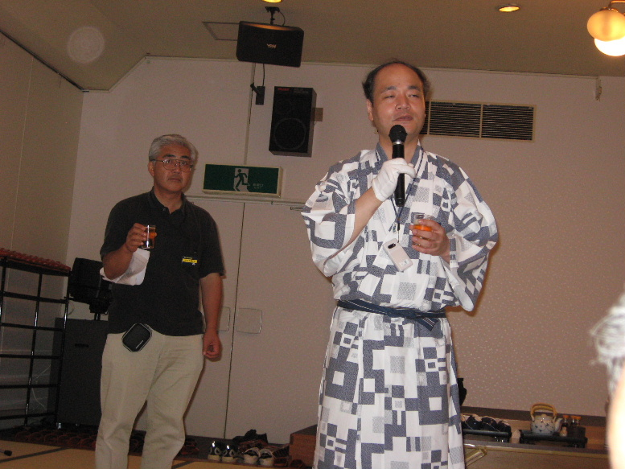
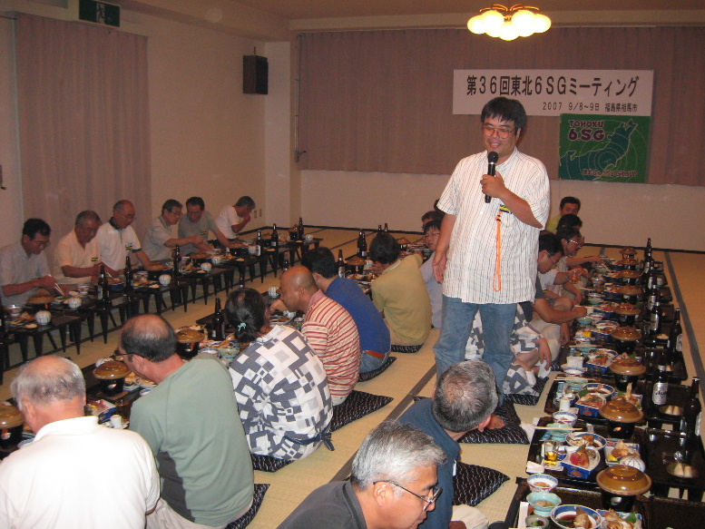
乾杯の音頭はJR2HCB / 自己紹介で挨拶するJH0RNN
翌9日は全員の記念撮影に引き続いて9:30時から講演会が始まった。
最初はJO1PSX・柴さんによる「福島県本宮市JCCサービスと6mアンテナ放射パターンの測定」。
続いてJA7AGL・相沢さんからアンテナシュミレーションソフト「MMANA」の使い方、
茨城県下のKDDIのパラボラアンテナを使ってEME運用を行ったJARLの実験局「8N1EMEプロジェクトについて」などが紹介された。
最後にJA1RJUから「フィリピン・スプラトリー・DX0JPペディションと6mのプロパゲーション」に付いての紹介があり、
内容の豊富だった今年の講演会も無事終了した。
最後に全員で次期開催地として「青森」を確認後、6SGの旗が福島の幹事から青森の幹事に引き継がれ、
大会は無事終了、定刻に解散した。
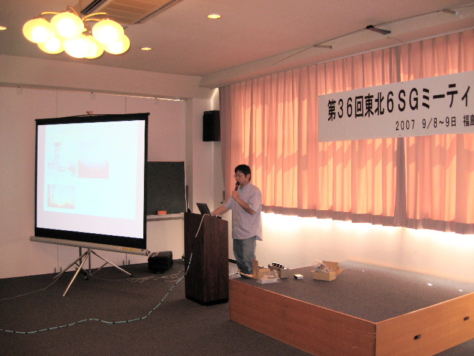
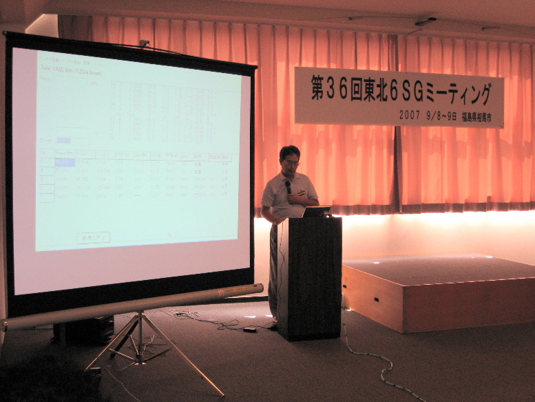
「JCCサービスと6mアンテナ放射」を紹介するJO1PSX / JA7AGLから「8N1EMEプロジェクト」の紹介
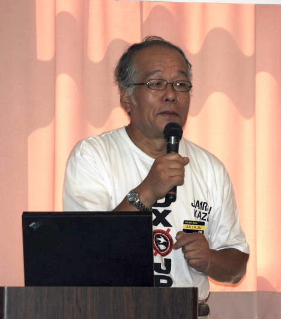
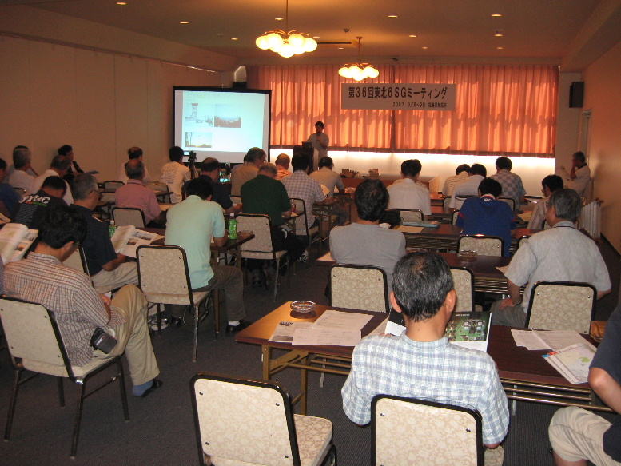
JA1RJUは「フィリピン・スプラトリー・DX0JPペディション」を紹介(左)
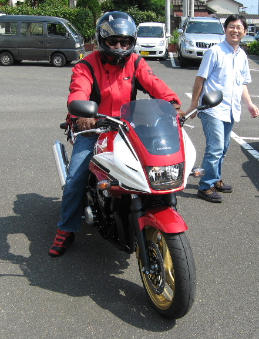
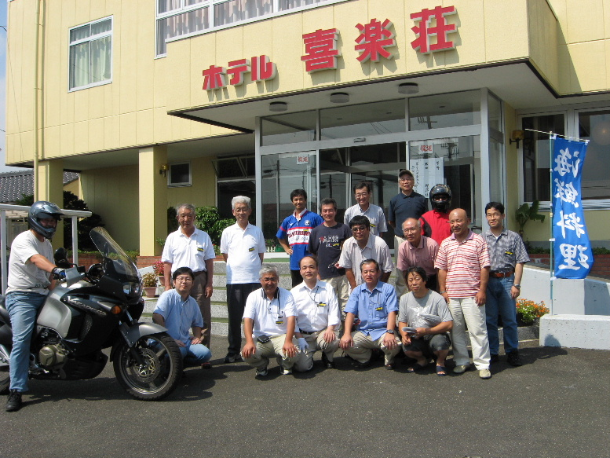
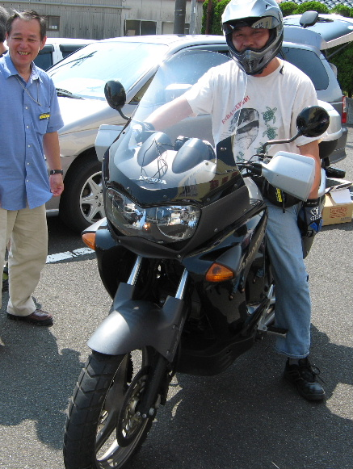
1エリアからバイクで参加したJA1DXA & JI1NJC(右)
【 第36回東北6m SSB Group ミーティング参加者 】
JA1BWD JM1KNQ/3 JA7JWF JH7VEP
JA1CJB JM1WBB JA7KHQ JH7WCF
JA1DWQ JN1JFC JA7KHQ(XYL) JR7AIW
JA1DXA JO1KBC JA7MIT JR7XGL
JA1RJU JO1PSX JA7QVI JE7CAI
JE1FWO JQ1DPP JA7WSZ JF7VLC
JF1RYU JR2HCB JA7XBA JI7NAI
JF1IRW JA7AGL JH7APD JK7OSL
JI1ILB JA7AHK JH7BRY JO7HAM
JI1DMH JA7CSS JH7DHS JH0RNN
JI1NJC JA7EIQ JH7JGM
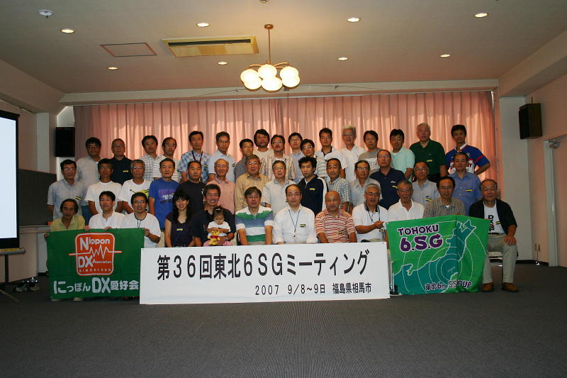
第36回東北6SGミーティングに参加した各局
(写真撮影・JH7JGM)
|
◎ 2007年九州 6m SSB Group(KSSG)ミーティング開催(2007.08.15)
2007年7月28-29日の両日、第29回・九州 6m SSB Group(KSSG)ミーティングが鹿児島市桜島の国民宿舎レインボー桜島で開催された。
初日の懇親会は会場の舞台に並んだ"薩摩の幻の焼酎"がメインで、乾杯の音頭に続いて抽選でそれぞれ参加者に配られた。
翌29日の講演会ではJA1RJU(JA6FRI)により、2月に行われたDX0JP(フィリピン・スプラトリー)のDX-Peditionの模様が紹介された。
全員の記念撮影の後、次回の開催地の「熊本」での再会を約し正午頃に解散。
|
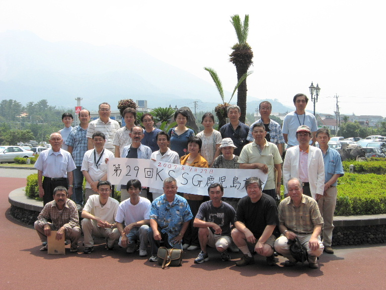
桜島をバックに参加者全員で記念撮影
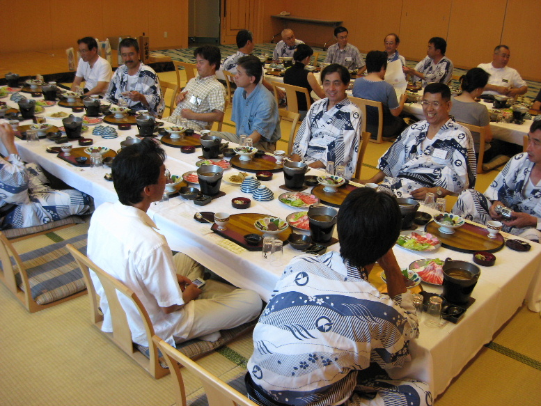
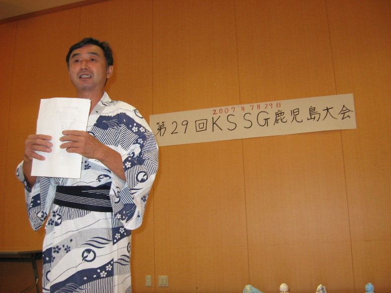
懇親会/挨拶する幹事役の地元鹿児島のJA6RGD・有馬さん
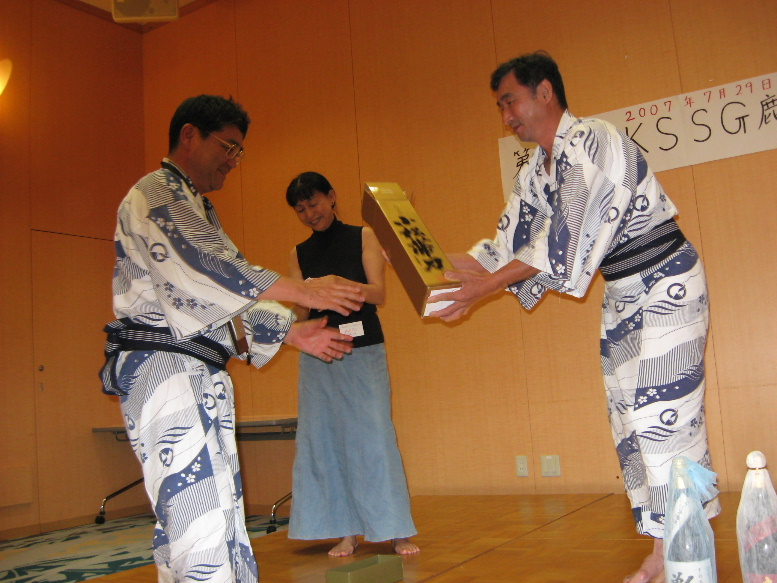
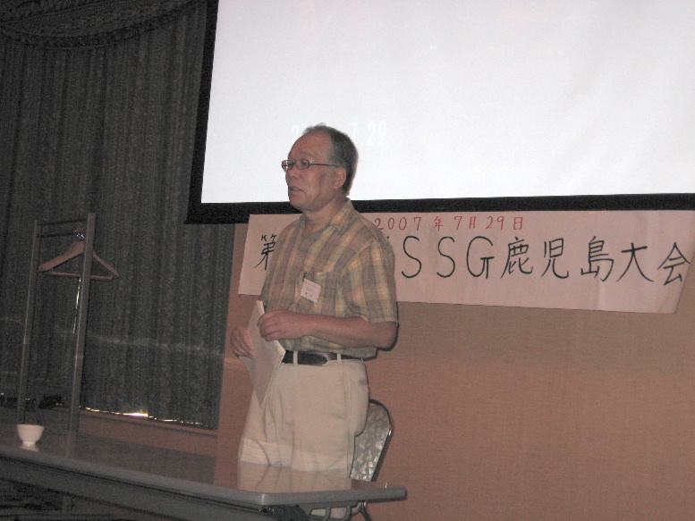
鹿児島名産・焼酎の抽選会？/講演会でのJA1RJU
◎ 50MHz愛好家・2007新年度懇親会開催(2007.04.14)
JA1エリアの50MHz愛好家の懇親会が4月14日午後18:00時から秋葉原の「とら八」で開催された。
忘年会、新年会が都合で開催出来なかったこともあり、久しぶりの顔合わせとなり大いに盛り上がりをみせた。
昨年に続くEsシーズンが今年も期待出来るのか？に話題が集中した。
参加メンバーの中にも昨年の経験を生かして、設備の見直しを計画、いよいよ本格的な始動を始めた局もいた。
"酒豪"？の集まりは時間の経つのも忘れ、日付が変わる寸前まで二次会で気勢を上げていた。
|
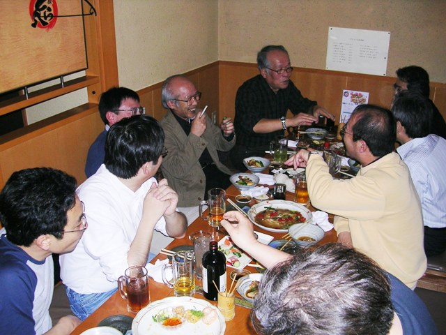
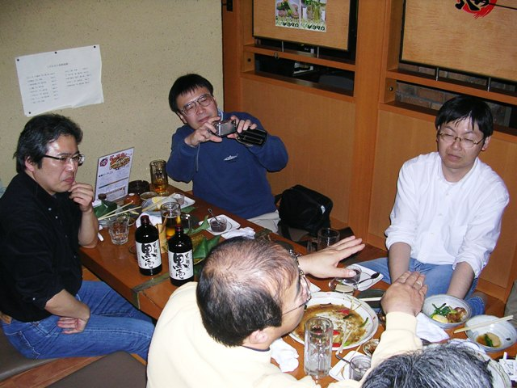
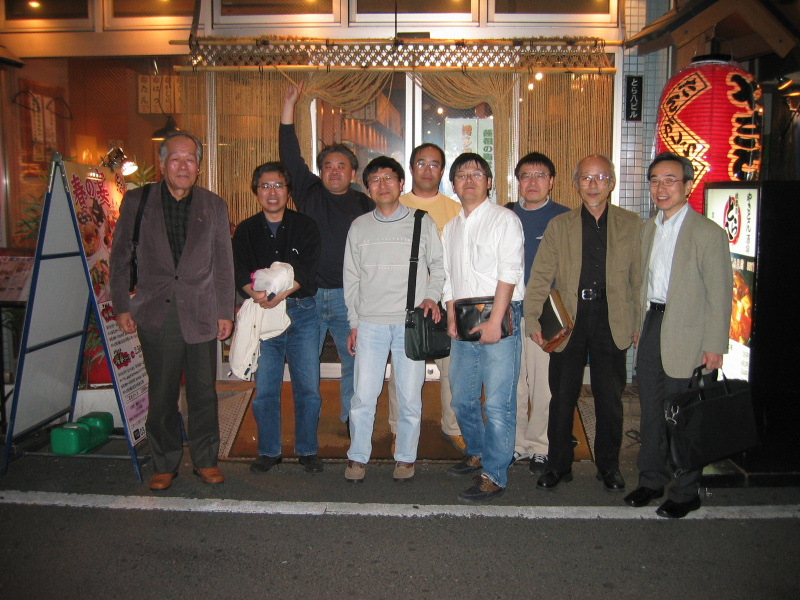
◎ 第36回東北6SGミーティング開催のお知らせ(2007.06.10)
爆発的にDXがオープンした2006年の夏に比べ期待された2007年ですが、
現段階では盛り上りに欠けて拍子抜けの感さえあります。
今年はゆっくりDXを楽しんでもらおうと9月に開催時期を延期した事が無駄になりそうです。
更にこの夏のEsの発生は短時間で弱くJCC・JCGハンティングも思うように進まないのが現実ではないでしょうか。
宮城県からバトンタッチされた福島県開催の東北6SGミーティングは、
今回も『海の幸』がとても美味しい相馬市での開催となりました。
久しぶりに集合し楽しく過ごしましょう。スタッフ一同皆さんの参加を心よりお待ち致しております。
記
○日 時 2007年9月8日（土）18:00より懇親会（16時より受付開始）
9日（日）09:00よりミーティング
○場 所 観光ホテル『喜楽荘』福島県相馬市尾浜字平前 55
（注：以前に開催したVSG・VCG会場とは別です）
電話0244-38-7171
http://www.bb.soma.or.jp/~kirakuso/
○参加費 13,000円（懇親会及び宿泊代・写真代込み）
1,000円（9日のみの参加者・写真代込み）
（寸前にキャンセルはキャンセル料が発生しますのでご注意下さい）
○申し込み 8月31日（火）まで。JA7WSZ 浜名 浩一（はまな こういち）
電話090-7565-0699又はja7wsz@hotmail.comへ
定員は40名です。定員になり次第締め切りますのでお早めに
○その他 ☆誘導等は省略しますのでお早目の到着をお願い致します
☆限られた方のみのご案内となってしまいますのでローカル各局とお
誘い合わせの上ご参加下さい
☆今回、封書で開催通知が届いた方でＥメールアドレスをお持ちの方
はお知らせ願います
☆ミーティング後半にジャンク市を行いますのでシャック等に眠って
いる不用品・売りたい物等がありましたら是非お持ち下さい
第36回東北6SGミーティング
世話人代表 JA7WSZ 浜名 浩一
E-mail： ja7wsz@hotmail.com
|